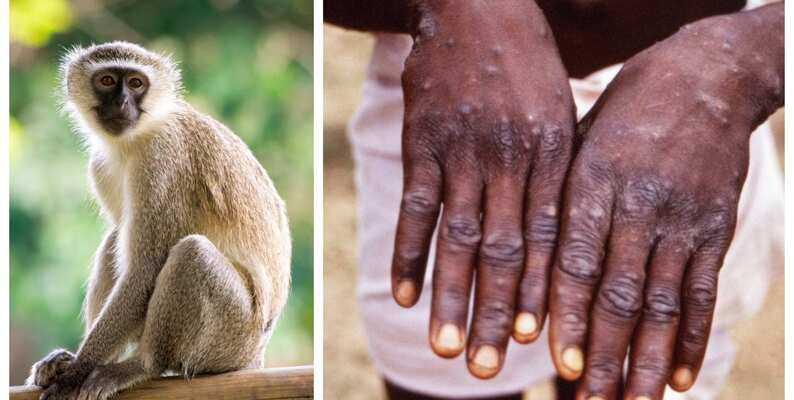

An example analysis with 2022 Monkeypox outbreak dataset. Intended Audience: Infectious Diseases related Public health professionals, epidemiologists, and policymakers. And Of course anyone interest in my website and reading my analysis, like you
JHBSPH
Author
Ruiqing Cai
Published
November 5, 2024

The dataset was uploaded by Hanzla Nawaz on Kaggle1 in 2022. Image created by Hanzla Nawaz
Background
Monkeypox, a viral disease caused by an orthopoxvirus, triggered a global outbreak in May 2022, originating in the Democratic Republic of the Congo. A newly identified strain, Clade Ib, was primarily responsible for this outbreak, spreading to regions and countries previously unaffected by the disease2. Understanding this transmission pattern and identifying potential risk factors is critical to assessing future transmission risks. This leads to my research question for this analysis:
Research Question
Are there patterns in the demographic and travel history data that could inform public health responses to Monkeypox outbreaks?
Data Description
The data contains detailed information about the Monkeypox cases during the 2022 outbreak, including demographic data, clinical information, etc. For more information, see the data dictionary.
Cleaning Process
In this section, I have conducted some data cleaning and also showed 5 different functions from dplyr or tidyr package. 1. dplyr::mutate; 2. dplyr::case_when; 3. dplyr::filter; 4. dplyr::count; 5. tidyr::separate_rows
Note
In this analysis page, all the code chuncks have been toggled. Please click the > Code to see more information about the code.
Code
# 1. Clean and standardize the Age columndataset_clean <- dataset |> dplyr::mutate(Age =as.character(Age)) |> dplyr::mutate(Age =ifelse(Age %in%c("CAN", "NA"), NA, Age)) |> dplyr::mutate(Age = dplyr::case_when( Age =="14"~14, Age =="15-19"~17, Age =="20-24"~22, Age =="20-44"~32, Age =="20-64"~42, Age =="25-29"~27, Age =="25-44"~35, Age =="<40"~25, Age =="30-34"~32, Age =="30-39"~34, Age =="30-59"~44, Age =="35-39"~37, Age =="40-44"~42, Age =="40-45"~43, Age =="40-49"~45, Age =="45-49"~47, Age =="50-54"~52, Age =="50-59"~55, Age =="55-59"~57, Age =="60-64"~62, Age =="65-69"~67, Age =="70-74"~72,TRUE~as.numeric(Age) # Convert any remaining single-age values to numeric ))dataset_clean <- dataset_clean |> dplyr::mutate(Age_Group = dplyr::case_when( Age <20~"Under 20", Age >=20& Age <30~"20-29", Age >=30& Age <40~"30-39", Age >=40& Age <50~"40-49", Age >=50& Age <60~"50-59", Age >=60& Age <70~"60-69", Age >=70~"70+",TRUE~"NA" ))# 2. Filter to focus on confirmed cases with travel history datadataset_filtered <- dataset_clean |> dplyr::filter(Status =="confirmed"&!is.na(Travel_history_country) & Travel_history_country !="Unknown"& Travel_history_country !="")# 3. Count the number of cases per country of identification and per travel history locationlocation_counts <- dataset_filtered |> dplyr::count(Country, Travel_history_country, name ="case_count")# 4. Separate travel history Countries into individual rows if there are multiple locations in one entrymonkeypox_separated <- dataset_filtered |> tidyr::separate_rows(Travel_history_country, sep =";")
Analysis Process
In this section, a few analysis have been produced with visualizations
Geographical Distribution of Cases (Map Plot)
Code
# 1. Map the cases # Load world map data with country shapesworld <-ne_countries(scale ="medium", returnclass ="sf")# Count cases by Country_ISO3 from your datasetcountry_cases <- dataset_clean |> dplyr::filter(Status =="confirmed"&!is.na(Country_ISO3)) |> dplyr::count(Country_ISO3, name ="case_count") # Count cases by Country_ISO3# Join the case data with world map data by Country_ISO3world_cases <- world |> dplyr::left_join(country_cases, by =c("iso_a3"="Country_ISO3"))# Plot the map, highlighting countries with casesggplot(data = world_cases) +geom_sf(aes(fill = case_count), color ="gray50") +# Color countries by case countscale_fill_gradient(low ="lightyellow", high ="darkred", na.value ="gray90", name ="Case Count") +# Color gradient for case countslabs(title ="Monkeypox Cases by Country",subtitle ="Countries shaded by the number of confirmed cases",caption ="Data source: Monkeypox dataset" ) +theme_minimal() +theme(legend.position ="bottom",panel.grid =element_blank() )
Figure 1: Map the distribution of the cases worldwide
The map visualized the distribution of monkeypox cases by country of residence with shading to indicate the case counts. The darker shading represents countries with higher number of cases, such as Canada, U.K., and Spain, indicating the most affected regions during the outbreak.
During the 2022 outbreak, the international spread not restricted to endemic regions but spread across North America and Europe, the regions with historically low incidence rates.
Epidemic Curve (Line Plot)
Code
# 2. Drawing Epidemic Curvedataset_clean <- dataset_clean |> dplyr::filter(!is.na(Date_confirmation)) |> dplyr::mutate(Date_confirmation =as.Date(Date_confirmation, format ="%Y/%m/%d"))epidemic_data <- dataset_clean |> dplyr::count(Date_confirmation, name ="case_count")invisible(Sys.setlocale("LC_TIME", "C")) # Set date in Englishggplot(epidemic_data, aes(x = Date_confirmation, y = case_count)) +geom_line() +labs(title ="Epidemic Curve of Monkeypox Cases",subtitle ="Number of confirmed cases by date of confirmation",x ="Date of Confirmation",y ="Number of Cases",caption ="Data source: Monkeypox dataset" ) +theme_classic()
Figure 2: Epidemic Curve for all the monkeypox confirmed cases by date of confirmation
The epidemic curve shows the temporal trend of confirmed monkeypox cases over time, with the x-axis representing the date of confirmation and the y-axis the number of cases.
There is a clear upward trend in the number of cases around mid-May, with multiple peaks toward the end of the month. A few things is good to notice:
1. the outbreak began with an initial case confirmed on May 6, followed by a significant upward trend starting around May 16. Given monkeypox’s estimated incubation period of approximately 8.2 days3, the estimated incubation period of 10 days from the epidemic curve align with the scientific evidence of monkeypox; 2. Several distinct peaks are visible toward the end of May, followed by a sharp decline in early June. This pattern indicates possible phases of intensified transmission or surges in case identifying, which could be associated with international travel and mobility during the outbreak period. The rapid decrease in cases in early June may suggest that public health interventions, likely implemented at the end of May, were effective in curtailing the outbreak. The overall left-skewed shape of the epidemic curve supports this, indicating a swift and effective response that helped to control the spread and bring the outbreak to an end by early June.
Hospitalization vs. Non-Hospitalization by Age Group (Bar Plot with Facets)
Code
# 3. Relationship between hospitalization and age groups## i. Calculate total case counts by Age Groupage_group_totals <- dataset_clean |> dplyr::count(Age_Group, name ="total_cases")## ii. Calculate hospitalization counts by Age Grouphospitalization_data <- dataset_clean |> dplyr::filter(Age_Group !="NA"&`Hospitalised..Y.N.NA.`%in%c("Y", "N")) |> dplyr::count(Age_Group, `Hospitalised..Y.N.NA.`, name ="case_count") |> dplyr::mutate(`Hospitalised..Y.N.NA.`= dplyr::case_when(`Hospitalised..Y.N.NA.`=="Y"~"Hospitalized",`Hospitalised..Y.N.NA.`=="N"~"Not Hospitalized",TRUE~"Unknown" ))## iii. Merge total cases and hospitalized cases, then calculate hospitalization ratehospitalization_rates <- hospitalization_data |> dplyr::group_by(Age_Group) |> dplyr::mutate(total_cases =sum(case_count),attack_rate = (case_count / total_cases) *100) |> dplyr::ungroup()## iiii. Plot hospitalization and non-hospitalization rates by age groupggplot(hospitalization_rates, aes(x = Age_Group, y = attack_rate, fill =`Hospitalised..Y.N.NA.`)) +geom_col(position =position_dodge(width =0.5), width =0.5) +facet_wrap(~`Hospitalised..Y.N.NA.`) +labs(title ="Hospitalization vs. Non-Hospitalization Attack Rates by Age Group",subtitle ="Comparison of hospitalization risks across age groups",x ="Age Group",y ="Attack Rate (%)",fill ="Hospitalization Status",caption ="Data source: Monkeypox dataset" ) +theme_classic()
Figure 3: Bar plot of hospitalization rate (attack rate) in confirmed cases for comparison among different age groups.
This plot compares hospitalization rates among different age groups for “Hospitalized” and “Not Hospitalized” cases. Higher hospitalization rates are observed among certain age groups, particularly in the “40-49” and “50-59” age groups, suggesting these demographics may face higher risks of severe outcomes. Conversely, younger age groups generally show lower hospitalization rates.
Code
## v. Attack Rates and Chi-Square Test on Hospitalizationcontingency_table <- hospitalization_data |> tidyr::pivot_wider(names_from =`Hospitalised..Y.N.NA.`, values_from = case_count, values_fill =0) |> dplyr::select(Age_Group, Hospitalized, `Not Hospitalized`) |>column_to_rownames(var ="Age_Group") |>as.matrix()## vi. Perform chi-square test and capture the resultchi_square_test <-chisq.test(contingency_table)chi_square_result <-capture.output(print(chi_square_test))
The \(\chi^2\) test can consider using the following equation to calculate:
(In this equation, \(\chi^2\) = chi square, \(O_i\) = observed value, \(E_i\) = expected value) \[\chi^2 = \sum {(O_i - E_i)^2 \over E_i}\]
Only depends on the p-value or single test (chi-square test in this analysis) is actaully not sufficient to prove your general idea.
By clicking on Show/Hide Results, the chi-square test results are revealed, showing a p-value of 0.002027, which is below the significance threshold of 0.05. This indicates a statistically significant difference in hospitalization risk across all age groups.
Heatmap of Travel History and Date of Confirmation
Code
# 4. Heatmap of Confirmed Cases by Travel History Country and Date of Confirmation# Filter out unknown travel history countriesheatmap_data <- monkeypox_separated |> dplyr::filter(!is.na(Travel_history_country) & Travel_history_country !="Unknown") |> dplyr::count(Date_confirmation, Travel_history_country, name ="case_count")# Convert Date_confirmation to date formatheatmap_data <- heatmap_data |> dplyr::mutate(Date_confirmation =as.Date(Date_confirmation, format ="%Y/%m/%d"))# Plot the heatmapggplot(heatmap_data, aes(x = Date_confirmation, y = Travel_history_country, fill = case_count)) +geom_tile(color ="white") +# Adds a white border around each tile for clarityscale_fill_gradient(low ="lightblue", high ="darkblue") +# Color gradient for case countlabs(title ="Heatmap of Confirmed Monkeypox Cases by Travel History",subtitle ="Frequency of confirmed cases by travel history country and date of confirmation",x ="Date of Confirmation",y ="Travel History Country",fill ="Number of Cases",caption ="Data source: Monkeypox dataset" ) +theme_minimal() +theme(axis.text.x =element_text(angle =45, hjust =1))
Figure 4: Heat map to locate confirmed cases’s destination countries by using their travel history
The heatmap provides insights into the travel history associated with confirmed monkeypox cases by mapping the date of confirmation against the travel history locations.
Notably, countries like Spain, Portugal, and England appear frequently, indicating these regions might have been initial points of infection or key nodes in the network of international transmission.
Analysis Summary
The analysis of the 2022 monkeypox outbreak dataset reveals important insights into the transmission patterns, demographic risk factors, and geographical spread of cases. The epidemic curve indicates a sharp rise in cases around mid-May, with multiple peaks and a rapid decline in early June, suggesting that interventions implemented at the end of May were effective in controlling the outbreak. The geographical distribution of cases highlights significant transmission in non-endemic regions, particularly in North America and Europe, underscoring the role of international travel in disease spread. Hospitalization rates varied significantly across age groups, with older populations facing a higher risk of severe outcomes, as confirmed by a chi-square test (p-value = 0.002027). This finding emphasizes the need for targeted interventions to protect vulnerable age groups. Overall, the analysis provides critical insights for public health planning, reinforcing the importance of timely interventions, monitoring travel-associated transmission, and allocating healthcare resources for at-risk populations.
Function Used in This Analysis
As I mentioned above, here are a few functions related to dplyr or tidyr:
Ponce L, Linton NM, Toh WH, et al. Incubation Period and Serial Interval of Mpox in 2022 Global Outbreak Compared with Historical Estimates. Emerging Infectious Diseases. 2024;30(6):1173-1181. doi:10.3201/eid3006.231095